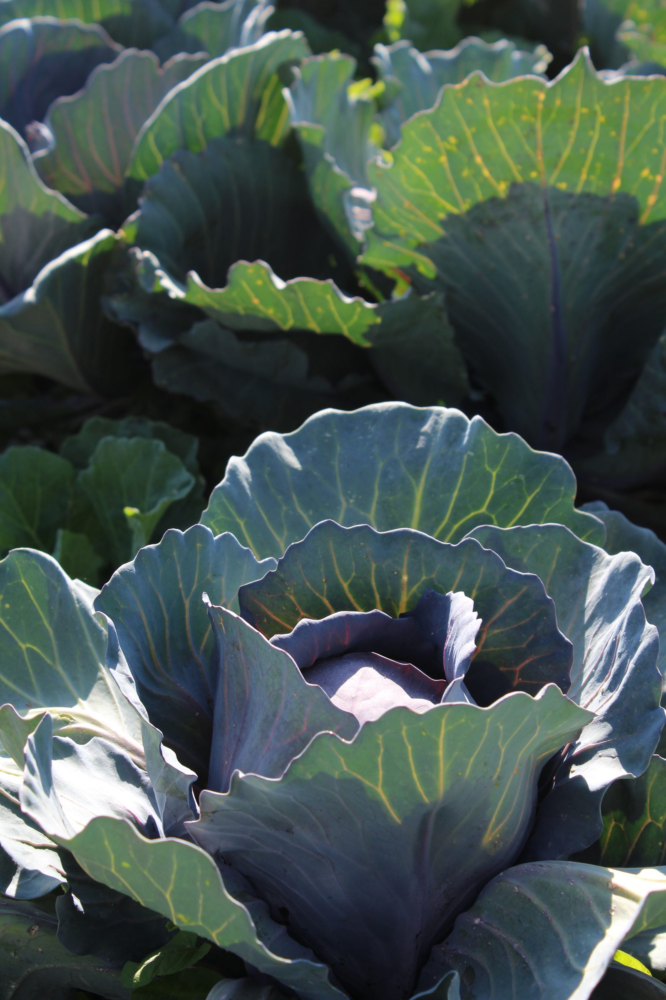
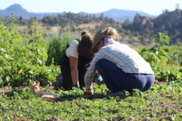
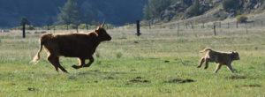

This Land Provides
Chaffee County’s land gives us so much bounty … stunning beauty, open landscapes, clean water, abundant wildlife and yes, plenty of food!
More than ever, we want to be able to access good food and know its story all the way back to the ranch or farm.
We encourage you to visit Chaffee Resources here to learn about the various supplemental food programs designed to meet the increasing demand for meals and pantry items.
For a quick snapshot of food access points across Chaffee County, click here.

For Chaffee Providers
Are you raising or growing food for the local market? Are you a retail outlet or restaurant offering locally made food? Are you providing food for people in need? If you would like your operation and products to be included on this site, please connect with us today!
List your businessA local food network
Need to stock your freezer or sign up for a CSA? Want to sample fresh food while dining out or find a nearby farmer’s market location? Need help putting food on the table? Discover something remarkable in our easy map, highlighted by category to encourage your enjoyment of locally produced food.
View the mapAbout Chaffee Provides
Supporting agriculture, even with the smallest purchase, helps keep Chaffee and surrounding counties intact. Productive land provides our stunning views, water quality and wildlife habitat, and protects our valuable lands from over-development. The agricultural sector is Chaffee County's fifth-largest economic driver. It exists and endures because of our neighbors who work these lands.
Chaffee Provides is about food security
The program was conceived during the COVID-19 pandemic, as vulnerabilities in our nation's food system became apparent. Grocery store shelves looked bare for a time because of bottlenecks in labor, transportation, and international imports. Perhaps you remember feeling anxious about food security.
Under all of this uncertainty, the community's desire to know about local food and how to get it has become more important than ever. To address the need, the Chaffee County Community Foundation started a group-based grant program called the Food Access Cohort, where grantees work together to increase coordination and ensure all Chaffee families and individuals have access to nutritious food. This website is a part of that program.
Local Agriculture Provides a Bounty of Food

Keep Working Land Working

Chaffee Provides hails from the vision of a future with continued beautiful rural landscapes through sustained agriculture and focused new development. The initiative's strategy is to support the agricultural bounty we already have for the benefit of everyone.
Guidestone's mission is to grow a vibrant agricultural future through education, community building, and partnerships. The organization's strategies are founded on the belief that meaningful exposure and experiences on local farms and ranches raises awareness and appreciation, and leads to choices that support and increase food system capacity. The result of these choices will be resilient local food systems, healthier communities, and a vibrant future for local agriculture.
Funding support is provided by the Chaffee County Community Foundation Food Access Cohort program and the Chaffee Common Ground fund.